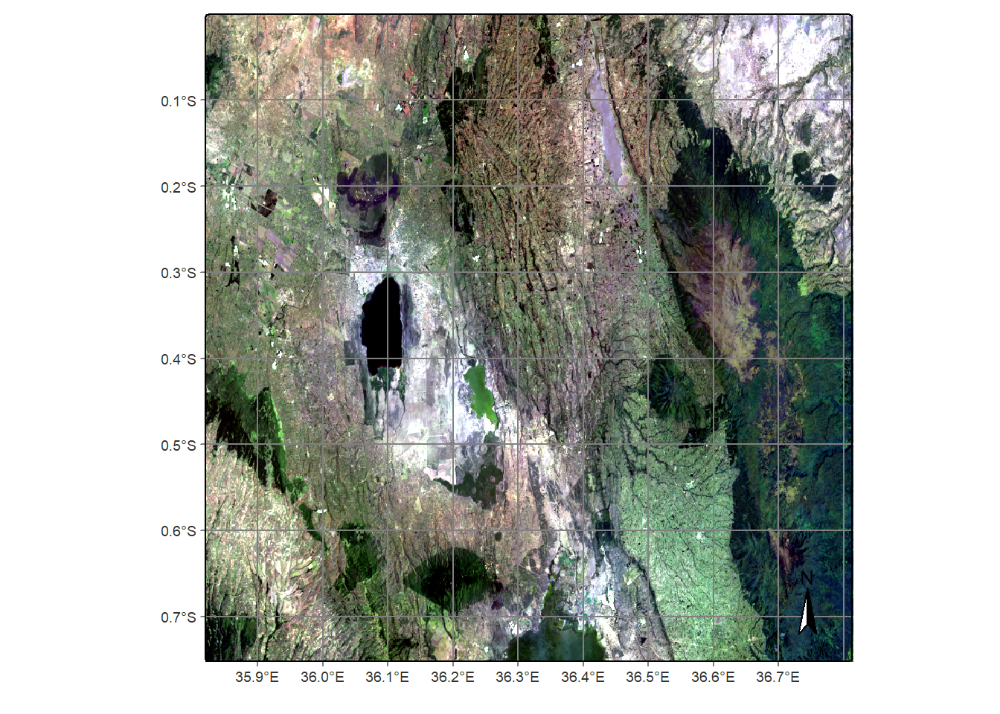
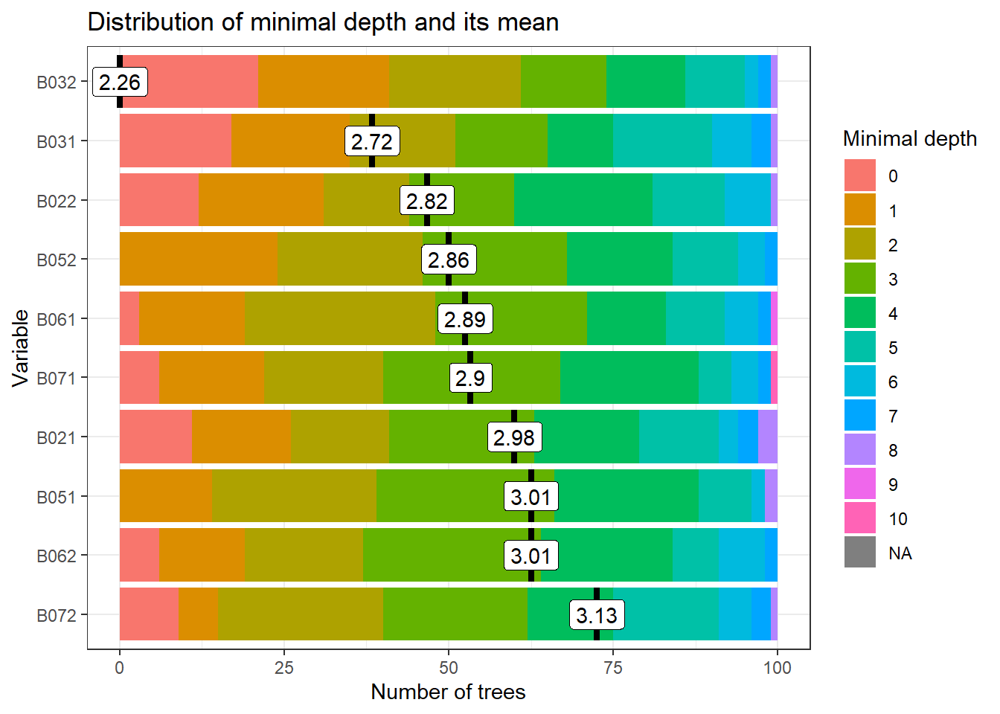
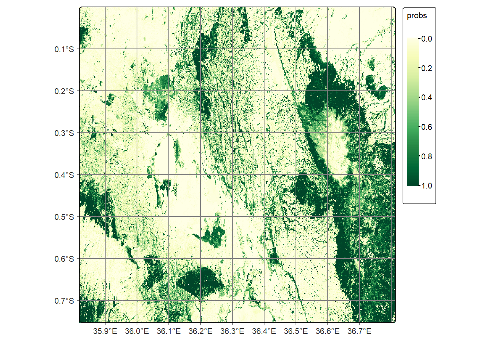
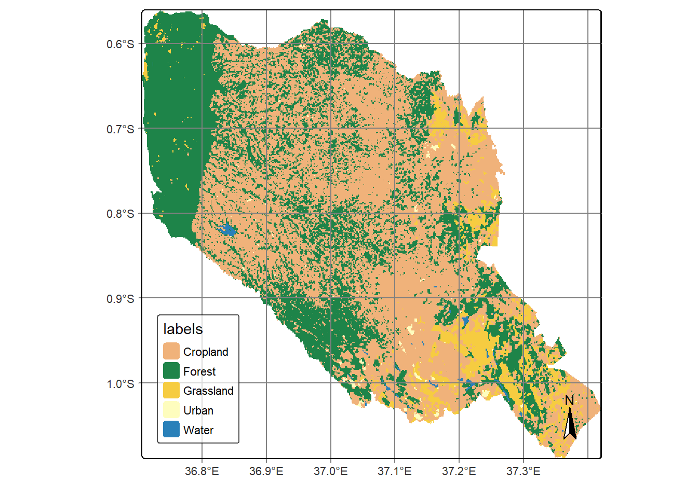

Classification with geomedian
Michael Wellington
2024-07-16
Load packages
library(sf)## Linking to GEOS 3.12.2, GDAL 3.9.3, PROJ 9.4.1; sf_use_s2() is TRUElibrary(terra)## terra 1.8.10library(sits)## SITS - satellite image time series analysis.## Loaded sits v1.5.2.
## See ?sits for help, citation("sits") for use in publication.
## Documentation avaliable in https://e-sensing.github.io/sitsbook/.## Important: Please read "Release Notes for SITS 1.5.2" in
## https://github.com/e-sensing/sits.library(rstac)
library(rnaturalearth)
library(tidyverse)## ── Attaching core tidyverse packages ────────────────────── tidyverse 2.0.0 ──
## ✔ dplyr 1.1.4 ✔ readr 2.1.5
## ✔ forcats 1.0.0 ✔ stringr 1.5.1
## ✔ ggplot2 3.5.1 ✔ tibble 3.2.1
## ✔ lubridate 1.9.4 ✔ tidyr 1.3.1
## ✔ purrr 1.0.2## ── Conflicts ──────────────────────────────────────── tidyverse_conflicts() ──
## ✖ tidyr::extract() masks terra::extract()
## ✖ dplyr::filter() masks stats::filter()
## ✖ dplyr::lag() masks stats::lag()
## ℹ Use the conflicted package (<http://conflicted.r-lib.org/>) to force all conflicts to become errorsLoad and plot Murang’a boundary
We’d like to limit our classification to the Murang’a county in Kenya. We’ve obtained the shapefile boundary from the Database of Global Administrative Areas (GADM) website and stored it in this repositories Data folder.
kenya_a2 <- read_sf('data/gadm41_KEN_2.shp')
kenya_muranga <- kenya_a2 %>% filter(NAME_1 == "Murang'a")
plot(kenya_muranga['NAME_2']) # Classes * Water * Grassland * Cropland * Urban * Forest
# Classes * Water * Grassland * Cropland * Urban * Forest
Load geomedian
This script loads a geomedian, a product unique to DE Africa because it provides a cloud-free composite over a given period.
SITS accepts a bounding box (bbox) as an area of interest, so we use the spatial extent of the Murang’a County for this parameter.
dea_gm_cube <- sits_cube(
source = "DEAFRICA",
collection = "GM-LS8-LS9-ANNUAL",
roi = c(
lon_min = ext(kenya_muranga)$xmin[[1]], lat_min = ext(kenya_muranga)$ymin[[1]],
lon_max = ext(kenya_muranga)$xmax[[1]], lat_max = ext(kenya_muranga)$ymax[[1]]
),
bands = c("SR_B2", "SR_B3", "SR_B4", "SR_B5", "SR_B6", "SR_B7", "SMAD"),
start_date = "2019-01-01",
end_date = "2022-12-31"
)## | | | 0% | |================== | 25% | |=================================== | 50% | |==================================================== | 75% | |======================================================================| 100%plot(dea_gm_cube, red = "B04", blue = "B02", green = "B03")## Warning: [minmax] min and max values not available for all layers. See
## 'setMinMax' or 'global'
muranga_points <- st_read('data/Muranga_classes.shp')## Reading layer `Muranga_classes' from data source
## `C:\Users\Michael\OneDrive - Australian National University\Proposals_Plans\jobs\DEAfrica\webtry\RSITS-Africa\DEAfr-sits\data\Muranga_classes.shp'
## using driver `ESRI Shapefile'
## Simple feature collection with 1158 features and 2 fields
## Geometry type: POINT
## Dimension: XY
## Bounding box: xmin: 36.70734 ymin: -1.062873 xmax: 37.41086 ymax: -0.5818391
## Geodetic CRS: WGS 84muranga_points## Simple feature collection with 1158 features and 2 fields
## Geometry type: POINT
## Dimension: XY
## Bounding box: xmin: 36.70734 ymin: -1.062873 xmax: 37.41086 ymax: -0.5818391
## Geodetic CRS: WGS 84
## First 10 features:
## id Class geometry
## 1 1 Water POINT (36.71006 -0.635504)
## 2 2 Water POINT (36.7103 -0.6349284)
## 3 3 Grassland POINT (36.70956 -0.6364749)
## 4 4 Grassland POINT (36.7111 -0.6348632)
## 5 5 Water POINT (36.71012 -0.6359683)
## 6 6 Grassland POINT (36.71119 -0.6350704)
## 7 7 Grassland POINT (36.71282 -0.6350579)
## 8 8 Grassland POINT (36.71561 -0.6324908)
## 9 9 Grassland POINT (36.7162 -0.6321665)
## 10 10 Grassland POINT (36.70863 -0.6440584)series <- sits_get_data(
cube=dea_gm_cube,
label_attr = "Class",
samples='data/Muranga_classes.shp')## although coordinates are longitude/latitude, st_union assumes that they are
## planar
## although coordinates are longitude/latitude, st_union assumes that they are
## planar
## although coordinates are longitude/latitude, st_union assumes that they are
## planar
## although coordinates are longitude/latitude, st_union assumes that they are
## planarsummary(series)## # A tibble: 5 × 3
## label count prop
## <chr> <int> <dbl>
## 1 Cropland 501 0.433
## 2 Forest 416 0.359
## 3 Grassland 129 0.111
## 4 Urban 68 0.0587
## 5 Water 44 0.0380dea_gm_cube$file_info## [[1]]
## # A tibble: 14 × 14
## fid date band xres yres xmin ymin xmax ymax nrows ncols
## <chr> <date> <chr> <dbl> <dbl> <dbl> <dbl> <dbl> <dbl> <dbl> <dbl>
## 1 02ac1902… 2021-01-01 B02 30 30 3.46e6 -96000 3.55e6 0 3200 3200
## 2 02ac1902… 2021-01-01 B03 30 30 3.46e6 -96000 3.55e6 0 3200 3200
## 3 02ac1902… 2021-01-01 B04 30 30 3.46e6 -96000 3.55e6 0 3200 3200
## 4 02ac1902… 2021-01-01 B05 30 30 3.46e6 -96000 3.55e6 0 3200 3200
## 5 02ac1902… 2021-01-01 B06 30 30 3.46e6 -96000 3.55e6 0 3200 3200
## 6 02ac1902… 2021-01-01 B07 30 30 3.46e6 -96000 3.55e6 0 3200 3200
## 7 02ac1902… 2021-01-01 SMAD 30 30 3.46e6 -96000 3.55e6 0 3200 3200
## 8 9eade28f… 2022-01-01 B02 30 30 3.46e6 -96000 3.55e6 0 3200 3200
## 9 9eade28f… 2022-01-01 B03 30 30 3.46e6 -96000 3.55e6 0 3200 3200
## 10 9eade28f… 2022-01-01 B04 30 30 3.46e6 -96000 3.55e6 0 3200 3200
## 11 9eade28f… 2022-01-01 B05 30 30 3.46e6 -96000 3.55e6 0 3200 3200
## 12 9eade28f… 2022-01-01 B06 30 30 3.46e6 -96000 3.55e6 0 3200 3200
## 13 9eade28f… 2022-01-01 B07 30 30 3.46e6 -96000 3.55e6 0 3200 3200
## 14 9eade28f… 2022-01-01 SMAD 30 30 3.46e6 -96000 3.55e6 0 3200 3200
## # ℹ 3 more variables: crs <chr>, path <chr>, cloud_cover <dbl>
##
## [[2]]
## # A tibble: 14 × 14
## fid date band xres yres xmin ymin xmax ymax nrows ncols
## <chr> <date> <chr> <dbl> <dbl> <dbl> <dbl> <dbl> <dbl> <dbl> <dbl>
## 1 0b46f5… 2021-01-01 B02 30 30 3.55e6 -192000 3.65e6 -96000 3200 3200
## 2 0b46f5… 2021-01-01 B03 30 30 3.55e6 -192000 3.65e6 -96000 3200 3200
## 3 0b46f5… 2021-01-01 B04 30 30 3.55e6 -192000 3.65e6 -96000 3200 3200
## 4 0b46f5… 2021-01-01 B05 30 30 3.55e6 -192000 3.65e6 -96000 3200 3200
## 5 0b46f5… 2021-01-01 B06 30 30 3.55e6 -192000 3.65e6 -96000 3200 3200
## 6 0b46f5… 2021-01-01 B07 30 30 3.55e6 -192000 3.65e6 -96000 3200 3200
## 7 0b46f5… 2021-01-01 SMAD 30 30 3.55e6 -192000 3.65e6 -96000 3200 3200
## 8 b64487… 2022-01-01 B02 30 30 3.55e6 -192000 3.65e6 -96000 3200 3200
## 9 b64487… 2022-01-01 B03 30 30 3.55e6 -192000 3.65e6 -96000 3200 3200
## 10 b64487… 2022-01-01 B04 30 30 3.55e6 -192000 3.65e6 -96000 3200 3200
## 11 b64487… 2022-01-01 B05 30 30 3.55e6 -192000 3.65e6 -96000 3200 3200
## 12 b64487… 2022-01-01 B06 30 30 3.55e6 -192000 3.65e6 -96000 3200 3200
## 13 b64487… 2022-01-01 B07 30 30 3.55e6 -192000 3.65e6 -96000 3200 3200
## 14 b64487… 2022-01-01 SMAD 30 30 3.55e6 -192000 3.65e6 -96000 3200 3200
## # ℹ 3 more variables: crs <chr>, path <chr>, cloud_cover <dbl>
##
## [[3]]
## # A tibble: 14 × 14
## fid date band xres yres xmin ymin xmax ymax nrows ncols
## <chr> <date> <chr> <dbl> <dbl> <dbl> <dbl> <dbl> <dbl> <dbl> <dbl>
## 1 494ba329… 2021-01-01 B02 30 30 3.55e6 -96000 3.65e6 0 3200 3200
## 2 494ba329… 2021-01-01 B03 30 30 3.55e6 -96000 3.65e6 0 3200 3200
## 3 494ba329… 2021-01-01 B04 30 30 3.55e6 -96000 3.65e6 0 3200 3200
## 4 494ba329… 2021-01-01 B05 30 30 3.55e6 -96000 3.65e6 0 3200 3200
## 5 494ba329… 2021-01-01 B06 30 30 3.55e6 -96000 3.65e6 0 3200 3200
## 6 494ba329… 2021-01-01 B07 30 30 3.55e6 -96000 3.65e6 0 3200 3200
## 7 494ba329… 2021-01-01 SMAD 30 30 3.55e6 -96000 3.65e6 0 3200 3200
## 8 2a0a1a9d… 2022-01-01 B02 30 30 3.55e6 -96000 3.65e6 0 3200 3200
## 9 2a0a1a9d… 2022-01-01 B03 30 30 3.55e6 -96000 3.65e6 0 3200 3200
## 10 2a0a1a9d… 2022-01-01 B04 30 30 3.55e6 -96000 3.65e6 0 3200 3200
## 11 2a0a1a9d… 2022-01-01 B05 30 30 3.55e6 -96000 3.65e6 0 3200 3200
## 12 2a0a1a9d… 2022-01-01 B06 30 30 3.55e6 -96000 3.65e6 0 3200 3200
## 13 2a0a1a9d… 2022-01-01 B07 30 30 3.55e6 -96000 3.65e6 0 3200 3200
## 14 2a0a1a9d… 2022-01-01 SMAD 30 30 3.55e6 -96000 3.65e6 0 3200 3200
## # ℹ 3 more variables: crs <chr>, path <chr>, cloud_cover <dbl>
##
## [[4]]
## # A tibble: 14 × 14
## fid date band xres yres xmin ymin xmax ymax nrows ncols
## <chr> <date> <chr> <dbl> <dbl> <dbl> <dbl> <dbl> <dbl> <dbl> <dbl>
## 1 829ce8… 2021-01-01 B02 30 30 3.46e6 -192000 3.55e6 -96000 3200 3200
## 2 829ce8… 2021-01-01 B03 30 30 3.46e6 -192000 3.55e6 -96000 3200 3200
## 3 829ce8… 2021-01-01 B04 30 30 3.46e6 -192000 3.55e6 -96000 3200 3200
## 4 829ce8… 2021-01-01 B05 30 30 3.46e6 -192000 3.55e6 -96000 3200 3200
## 5 829ce8… 2021-01-01 B06 30 30 3.46e6 -192000 3.55e6 -96000 3200 3200
## 6 829ce8… 2021-01-01 B07 30 30 3.46e6 -192000 3.55e6 -96000 3200 3200
## 7 829ce8… 2021-01-01 SMAD 30 30 3.46e6 -192000 3.55e6 -96000 3200 3200
## 8 50782b… 2022-01-01 B02 30 30 3.46e6 -192000 3.55e6 -96000 3200 3200
## 9 50782b… 2022-01-01 B03 30 30 3.46e6 -192000 3.55e6 -96000 3200 3200
## 10 50782b… 2022-01-01 B04 30 30 3.46e6 -192000 3.55e6 -96000 3200 3200
## 11 50782b… 2022-01-01 B05 30 30 3.46e6 -192000 3.55e6 -96000 3200 3200
## 12 50782b… 2022-01-01 B06 30 30 3.46e6 -192000 3.55e6 -96000 3200 3200
## 13 50782b… 2022-01-01 B07 30 30 3.46e6 -192000 3.55e6 -96000 3200 3200
## 14 50782b… 2022-01-01 SMAD 30 30 3.46e6 -192000 3.55e6 -96000 3200 3200
## # ℹ 3 more variables: crs <chr>, path <chr>, cloud_cover <dbl>series %>%
sits_apply(NDVI = (B05 - B04) / (B05 + B04)) %>%
sits_apply(EVI = 2.5 * (B05 - B04) / ((B05 + 6.0 * B04 - 7.5 * B02) + 1.0)) %>%
sits_select(bands = c("NDVI", "EVI"))## # A tibble: 1,158 × 7
## longitude latitude start_date end_date label cube time_series
## <dbl> <dbl> <date> <date> <chr> <chr> <list>
## 1 36.7 -0.639 2021-01-01 2022-01-01 Grassland GM-LS8-LS9-AN… <tibble>
## 2 36.7 -0.638 2021-01-01 2022-01-01 Grassland GM-LS8-LS9-AN… <tibble>
## 3 36.7 -0.644 2021-01-01 2022-01-01 Grassland GM-LS8-LS9-AN… <tibble>
## 4 36.7 -0.644 2021-01-01 2022-01-01 Grassland GM-LS8-LS9-AN… <tibble>
## 5 36.7 -0.642 2021-01-01 2022-01-01 Grassland GM-LS8-LS9-AN… <tibble>
## 6 36.7 -0.673 2021-01-01 2022-01-01 Forest GM-LS8-LS9-AN… <tibble>
## 7 36.7 -0.636 2021-01-01 2022-01-01 Grassland GM-LS8-LS9-AN… <tibble>
## 8 36.7 -0.636 2021-01-01 2022-01-01 Water GM-LS8-LS9-AN… <tibble>
## 9 36.7 -0.636 2021-01-01 2022-01-01 Water GM-LS8-LS9-AN… <tibble>
## 10 36.7 -0.635 2021-01-01 2022-01-01 Water GM-LS8-LS9-AN… <tibble>
## # ℹ 1,148 more rowsset.seed(20)
rfor_model <- sits_train(
series,
ml_method = sits_rfor()
)
plot(rfor_model)## Registered S3 method overwritten by 'GGally':
## method from
## +.gg ggplot2
muranga_probs <- sits_classify(
data = dea_gm_cube,
ml_model = rfor_model,
output_dir = "data",
version = "rf-raster",
multicores = 4,
memsize = 16
)## recovery mode: data already exists. To produce new data, change output_dir or version
## recovery mode: data already exists. To produce new data, change output_dir or version
## recovery mode: data already exists. To produce new data, change output_dir or version
## recovery mode: data already exists. To produce new data, change output_dir or versionplot(muranga_probs, labels = "Forest", palette = "YlGn") ## Classified Map
muranga_smooth <- sits_smooth(
cube = muranga_probs,
multicores = 4,
memsize = 12,
output_dir = "data",
version = "rf-raster"
)## recovery mode: data already exists. To produce new data, change output_dir or version
## recovery mode: data already exists. To produce new data, change output_dir or version
## recovery mode: data already exists. To produce new data, change output_dir or version
## recovery mode: data already exists. To produce new data, change output_dir or versionmuranga_class <- sits_label_classification(
cube = muranga_smooth,
multicores = 4,
memsize = 12,
output_dir = "data",
version = "rf-raster"
)## recovery mode: data already exists. To produce new data, change output_dir or version
## recovery mode: data already exists. To produce new data, change output_dir or version
## recovery mode: data already exists. To produce new data, change output_dir or version
## recovery mode: data already exists. To produce new data, change output_dir or version# Plot the thematic map
plot(muranga_class, tile=muranga_class$tile[2])## Warning in .colors_get(labels = labels, legend = legend, palette = palette, :
## missing colors for labelsUrban## Warning in .colors_get(labels = labels, legend = legend, palette = palette, :
## palette for missing colors isSpectral ## Create mosaic of classified classes
## Create mosaic of classified classes
muranga_mosaic <- sits_mosaic(
roi = st_transform(st_union(kenya_muranga), "EPSG:6933"),
crs = "EPSG:6933",
cube = muranga_class,
multicores = 2,
output_dir = "data",
version = "rf-raster"
)## | | | 0% | |================== | 25% | |=================================== | 50% | |==================================================== | 75% | |======================================================================| 100%
## | | | 0% | |======================================================================| 100%plot(muranga_mosaic, legend_position = "inside")## Warning in .colors_get(labels = labels, legend = legend, palette = palette, :
## missing colors for labelsUrban## Warning in .colors_get(labels = labels, legend = legend, palette = palette, :
## palette for missing colors isSpectral
Conclusion
We can see that DE Africa’s unique geomedian is accessible for classification in R.